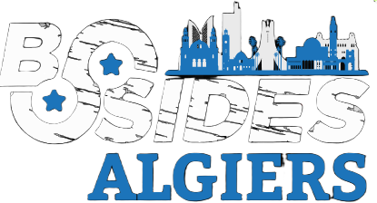
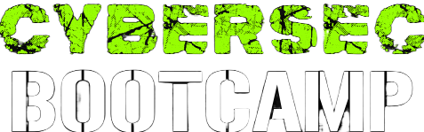

Knowledge Sharing
Create a vibrant, ego-free space for open knowledge exchange, peer mentorship, code inspection, and constructive CTF competition.
A cybersecurity community built around learning, experimentation, competition, and collaboration. Cultivating elite defensive and offensive security practitioners since 2011.
Founded in 2011 under the name OWASP Club, Shellmates is the official cybersecurity student club at the National Higher School of Computer Science in Algiers (ESI). We are dedicated to promoting cybersecurity awareness, ethical hacking literacy, and technical engineering across Algeria through real-world labs, CTF competitions, and nationwide symposiums.
Create a vibrant, ego-free space for open knowledge exchange, peer mentorship, code inspection, and constructive CTF competition.
Introduce students and newcomers to the vital foundations of ethical hacking, secure coding architecture, defensive analysis, and low-level computer systems.
Compete at the highest global CTF arenas, contributing writeups, discovering novel CVEs, and cementing Algeria's presence in global cybersecurity rankings.
Leads the club's offensive and defensive security programs, technical infrastructure, CTFs, and specialized research workshops.
Engineers and maintains club digital platforms, internal CTF infrastructure, scoring portals, and specialized automation tools.
Architects and orchestrates premier club events, venue logistics, live schedules, and national cyber symposiums.
Oversees member onboarding, talent integration, community welfare, and internal team synergy across cohorts.
Crafts the club's visual identity, graphic materials, visual stage assets, digital UI, and futuristic brand language.
Directs outreach strategy, press coverage, community announcements, and public narrative across digital media channels.
Produces documentary photography, teaser motion graphics, event recaps, and high-impact audiovisual assets.
Forges strategic industry partnerships, sponsorships, university alliances, and professional alumni networks.
Cultivating technical expertise through hands-on training, high-stakes competition, and open community collaboration across four primary pillars.
Hands-on technical sessions covering both offensive and defensive cybersecurity: Web Exploitation, Cryptography, Binary Exploitation (Pwn), Reverse Engineering, and Digital Forensics.
Exclusive member-only CTFs, practical challenges, adversary team simulations, and technical bonding designed to test stamina, problem-solving speed, and dynamic thinking.
Public hackathons, nationwide competitions, and university-wide cybersecurity challenges bringing together talent from across Algeria to compete and learn.
Hack The Box collaborative sessions, live machine solving, tradecraft exchange, knowledge sharing, and informal community roundtables in isolated labs.
The flagship cybersecurity initiation event held by Shellmates for over a decade. Built to onboard beginners and students into ethical hacking, core security disciplines, and a real-time capture-the-flag tournament.

Part of the prestigious global Security BSides conference network, organized exclusively by Shellmates since 2020. Features world-class keynote speakers, technical panel debates, industry workshops, and an intense high-stakes CTF tournament.

The comprehensive bootcamp and gateway program where newly recruited club members discover the 5 pillars of cybersecurity with direct 1-on-1 guidance from senior mentors, fast-tracking them from curious recruits to active contributors.
An internal project where a team of mentors gather to make cyber security content for the club and tackle subjects beyond ctf categories for example last year we featured active directory, malware development, web exploitation, blue teaming
Is an internal project where we make teams and collaborate to recreate famous cybersecurity attacks in isolated controlled environment to showcase network defense, and events
Shellmates is more than a cybersecurity club — it is a passionate community built around learning, experimentation, competition, and collaboration. Whether your goal is to master offensive security, explore modern defense, build impactful tools, or find like-minded peers, there is a place for you here. Step up, push your limits, and shape the future of cybersecurity.